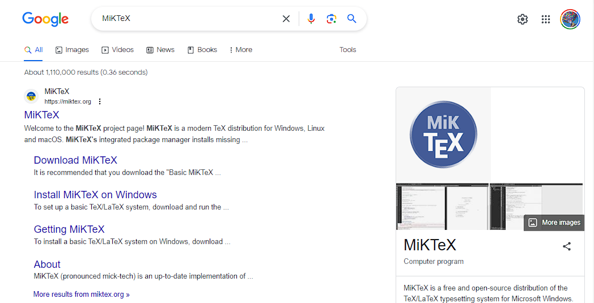
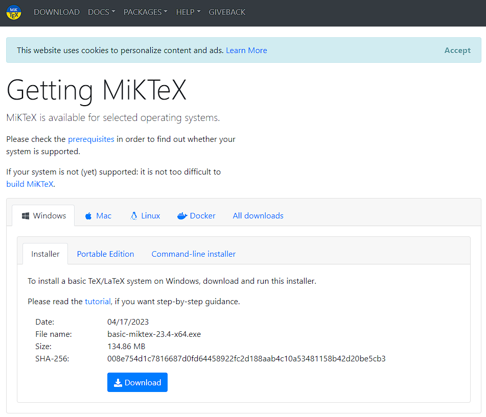
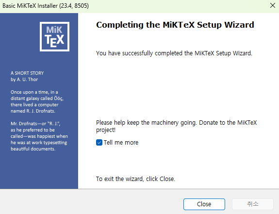
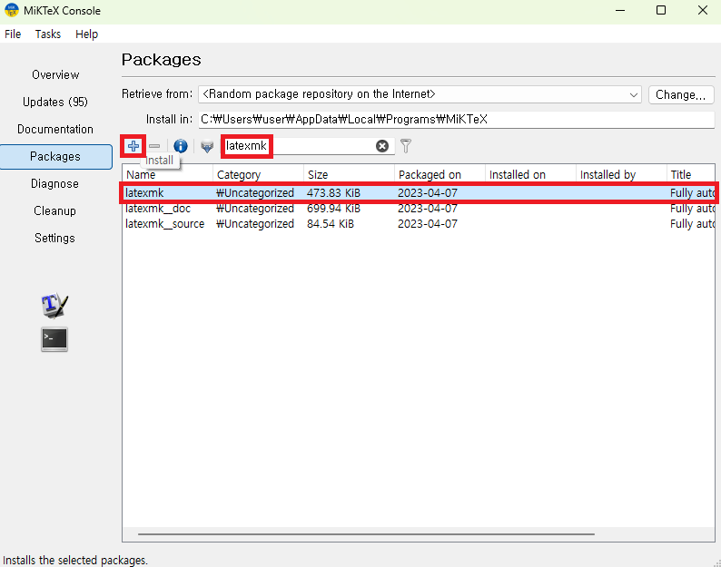
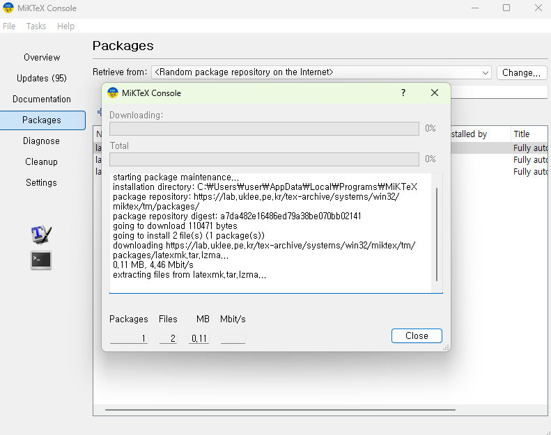
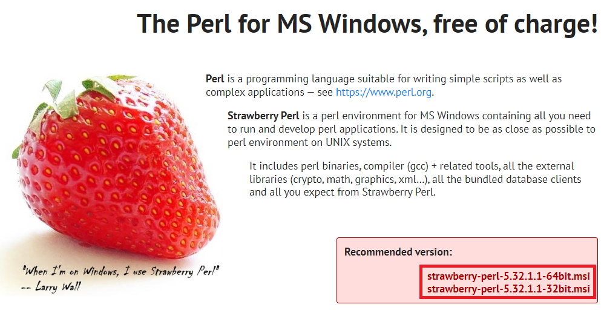
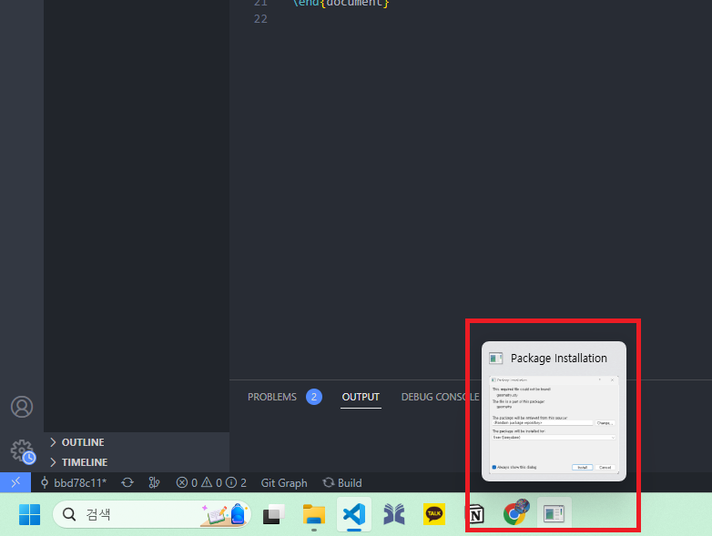
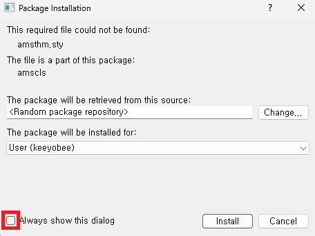

Section 1.1
1.1.3 Option 3: MiKTeX (Windows only)
MiKTeX is the LaTeX distribution used in this course. It supports on-demand package installation, making it lightweight to start.
Step 1
Search for MiKTeX on Google and open the official homepage.
If MiKTeX is already installed, skip to Step 4. If TeX Live is installed, remove it first. MiKTeX homepage →

Step 2
Download the installer for your operating system.

Step 3
Run the Basic MiKTeX Installer. Proceed with the default options — no changes needed.


Step 4
Open MiKTeX Console, go to the Packages tab, search for latexmk, and click + to install. Updates can be done later.



Tip — Auto package installation
When a package is missing during compilation, MiKTeX will prompt you to install it. Check the box and click Install to enable automatic installation going forward.
